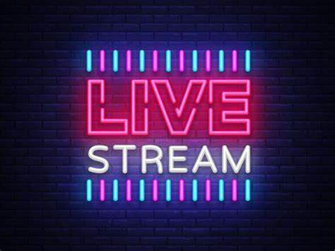

Everything you need to know about streaming
What is streaming?
Streaming is one of the most popular ways of expressing your passion for a hobbie to the world in real time. From gaming, baking, building fences, or plumbing. The possibilities are endless for what you can stream.

Benefits of Streaming
* First and most important is to have fun!
*Get to meet new people who share the same interests
Help build a community of people who share commin interests
How does streaming give back?
Streaming can often affect not only the one streaming by giving them a place to express themselves but it can also give back to the community by giving that community a place to feel like they belong, a place to feel welcomed and to express their own desires for acceptance. Sometimes streamers can also give back in a monetary way by getting involved with charities. All of these things can come from simply sharing your passion about something with others. In lamens terms, STREAMING IS GREAT!!